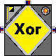
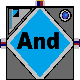
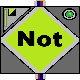
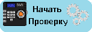
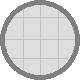
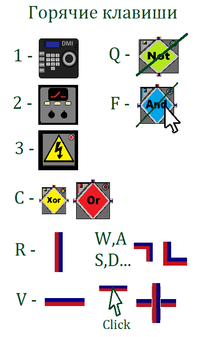
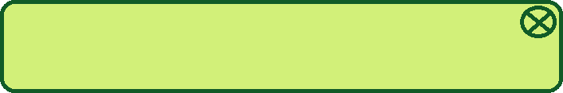

Задача:
В помещении имеется 3 датчика освещённости.
Свет должен загораться, если хотя бы на одном
из датчиков станет темно.


Как играть:
Вам необходимо собрать логическую схему из представл-
енных внизу блоков. Перед вами расположено поле
размером 20 на 20 ячеек.
Данный блок является датчиком, его можно
настроить, если нажать на него левой кнопкой
мыши. Свет - TRUE, темнота - FALSE. Утечка - TRUE,
нет утечки - FALSE. (кол-во ограничено)
 А это реле. Оно замыкает и размыкает контакты.
А это реле. Оно замыкает и размыкает контакты.
Слева разположен вход питания, сверху выход,
снизу логический вход. Если сигнал TRUE,
контакты размыкаются. (кол-во ограничено)
Источник питания генерирует электричество.
Без него схема не имеет смысла. Внимание! Не
путайте сигналы TRUE и FALSE и питание, - это разные вещи. (кол-во ограничено)
Это один из логических элементов. Каждый из них
принимает и выдаёт сигналы TRUE, FALSE.
Элементы Or, Xor и And имеют два входа, слева и
справа, и один выход сверху. Not - один вход снизу.
 Все блоки на поле соединяются проводами.
Все блоки на поле соединяются проводами.
Внимание! Питание может заменить сигнал
TRUE, но сами сигналы не могут быть питанием.
Обратите внимание на перекрестия проводов.
Вы можете проверить своё решение, нажав на соответств-
ующую кнопку, которая покажет один из верных
вариантов. Помните, что правильных решений может быть
бесконечное множество. Желаем Вам успеха!

Приветствуем Вас в нашей увлекательной игре,
направленной на развитие логического мышления.
Вы можете ознакомиться с правилами игры,
заглянув в раздел: Как играть. Вперёд, приступайте к изучению!